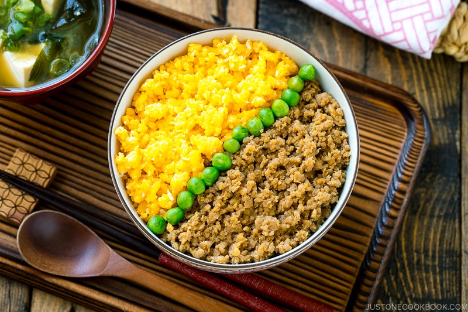

home
Soboro Don (Ground Chicken Rice Bowl)

Easy and delicious Japanese rice bowl
Sweet-savory ground chicken, scrambled eggs, and green veggies on top of fluffy steamed rice. A comfort meal ideal for a stressful day, or as remedy for an upset stomach.
Ingredients
For the Seasoned Ground Chicken
- 2 tsp grated ginger
- 1 lb ground chicken
- 2 tbsp sake
- 2 tbsp mirin
- 3 tbsp sugar (This dish is traditionally sweet, but sugar can be lowered to 1-2 tbsp to taste.)
- 5 tbsp soy sauce
For the Scrambled Eggs
- 6 large eggs
- 2 tbsp sugar (if opting for a less sweet dish, the sugar can be lowered or omitted entirely)
- ½ tsp salt
For Serving
- 4 servings cooked Japanese short-grain rice
- 4 tbsp cooked green peas
Instructions
Chicken
- Grate ginger and set aside.
- Combine all seasoned ground chicken ingredients in a medium saucepan.
- Mix together until all ingredients are incorporated and chicken is broken into smaller bits
- Place saucepan on stove on medium-low heat. Cook, stirring constantly, until chicken is no longer pink.
- Once chicken releases it's juices, cook until liquid is reduced and almost gone. Remove from heat.
Scrambled Eggs
- Add all eggs, 1 tbsp sugar (omitting if desired), and ½ tsp salt to a medium saucepan. Beat egg mixture until sugar is dissolved.
- Cook over medium-low heat. Stir often.
- As eggs solidify, stir to break up into smaller pieces. Eggs are finished when soft and fluffy.
Assembly
- Serve cooked rice in bowl. Spoon chicken over half of rice, and egg over the remaining half. Put peas down the middle of the bowl, where the chicken and eggs meet.
- Enjoy immediately.
Images and recipe description credit to https://www.justonecookbook.com/tori-soboro-donburi//